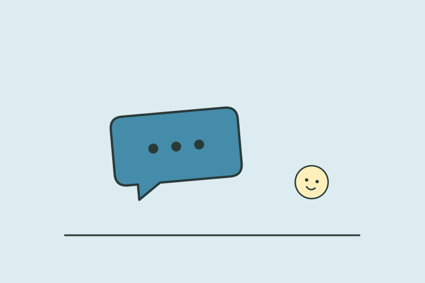

나의 결과는?
장난 유도형
재미와 텐션 속에서 설렘을 만드는 타입이런 타입이에요
당신은 썸에서도 웃음과 농담, 장난 속에 호감을 섞는 편입니다. 너무 무겁지 않게 자연스럽게 끌어당기는 데 강합니다.
이런 순간, 나답죠
가벼운 장난을 주고받는 중에 둘만 아는 이야기가 늘어나요. 웃을 포인트를 찾으면서 상대에게 조금씩 가까워지는 방식이 편해요.
- 센스 있는 플러팅
- 어색함 해소
- 가벼운 설렘 만들기
놓치기 쉬운 부분
장난의 크기가 커지면 호감보다 놀림으로 전달될 수 있어요. 상대가 함께 웃는지 살피고 불편해하는 주제는 내려놓아주세요.
오늘 해볼 한 가지
농담 대신 상대의 좋은 점 하나를 구체적으로 말하는 대화를 해보세요.
플러팅 키워드
장난센스가벼운 텐션센스 있는어색함 해소
다른 타입과 나란히 보면
재미로 보는 성향 콘텐츠예요. 전문적인 심리 검사나 진단이 아니며, 타입 간 관계도 비교를 위한 이야기예요.
답변별 유형 점수를 더해 가장 높은 타입을 보여줘요. 동점이면 직진 시그널형 → 장난 유도형 → 다정 배려형 → 은근 스며듦형 순서에서 앞선 타입이 표시돼요.
읽어봤다면, 친구와 비교해볼까요?
다음 테스트도 이어서 보기
 내 연애 열차 운행 타입은?
내 연애 열차 운행 타입은?